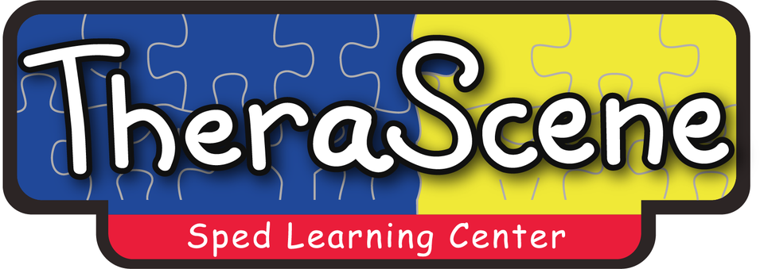

Learning goals
Breaking learning into achievable steps and choosing strategies that suit a learner’s strengths and needs.

03 / Special Education
Special education offers tailored teaching and support to help learners access learning, build skills, and participate in ways that reflect their individual needs.
What special education can include
In the Philippines, the Department of Education describes Special Needs Education as customized instruction or services designed to meet a learner’s diverse needs. The examples below are general areas to ask about; they are not a confirmed list of TheraScene’s curriculum or services.
Breaking learning into achievable steps and choosing strategies that suit a learner’s strengths and needs.
Considering supports, adjustments, or learning materials that can help a learner take part.
Depending on the learner and program, learning may include academic, communication, social, or everyday skills.
A good first conversation
Share what your child enjoys, what they are learning now, and where they would like more support. Ask about the program’s age or grade range, learning approach, family communication, and any steps needed before starting.
TheraScene can confirm its own program details, eligibility, session format, and current availability directly.
Philippine inclusive education guidance from DepEd ↗